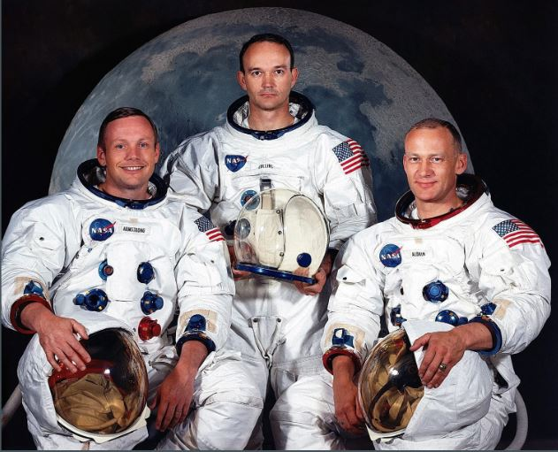
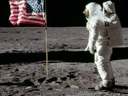

<!DOCTYPE html>
<html lang="en">
<head>
    
 
    <title>L'allunaggio</title>
	
	<header>
    <h1>Lo sbarco sulla luna del 1969</h1>

</header>


    <style>
	

        /* Stile per il menu */
        ul {
            list-style-type: none;
            margin: 0;
            padding: 0;
            background-color: blue;
            overflow: hidden;
        }
        li {
            float: left;
        }
        li a {
            display: block;
            color: white;
            text-align: center;
            padding: 14px 16px;
            text-decoration: none;
        }
        li a:hover {
            background-color: #111;
        }
    </style>
</head>
<body>


</body>
</html>
    <style>
	
	
	/* Stili per dispositivi con larghezza massima di 768px (tablet) */
@media (max-width: 768px) {
    .header {
        font-size: 1.5em; /* Dimensione del carattere ridotta per dispositivi più piccoli */
    }
}

/* Stili per dispositivi con larghezza massima di 480px (smartphone) */
@media (max-width: 480px) {
    .header {
        font-size: 1.2em; /* Dimensione del carattere ulteriormente ridotta per smartphone */
    }
}
	
			 ul.a {
  list-style-type: circle;
}
h1   {color:yellow ;}

h2  {color:yellow ;}
p    {color: white;}
        body {
            font-family:Tahoma;
            margin: 0;
            padding: 0;
            background-color: midnightblue; ;
        }
        header {
            background-color:  midnightblue;;
            color: white;
            padding: 20px;
            text-align: center;
        }
        section {
            padding: 20px;
			
			
        }
		
		
		
		p {outline-color:blue;}

	p.solid {outline-style: solid;}
p {
    border: 2px solid blue; /* Aggiunge un bordo bianco di 2px ai paragrafi */
    padding: 10px; /* Aggiunge spazio interno di 10px tra il testo e il bordo */
}
      
    </style>

<body>
	 

<head>
  <meta charset="UTF-8">
  <meta name="viewport" content="width=device-width, initial-scale=1.0">
  <title>Menu</title>
  <link rel="stylesheet" href="styles.css">
</head>


<nav>
  <ul>
    <li><a  href="index.html">home</a></li>
	<li><a  href="pagina2.html">la guerra fredda</a></li>
    <li><a href="pagina3.html">le tecnologie utilizzate</a></li>
    <li><a href="pagina4.html">fonti</a></li>
    
  </ul>
</nav>


      
  
</head>
<body>


<section>
    <h2>presentazione</h2>
     <p> Il 21 luglio 1969 due astronauti statunitensi, Neil Armstrong e Buzz Aldrin, membri della missione Apollo 11, misero piede sulla Luna 
	e camminarono per la prima volta sul suolo lunare. L’impresa era stata pianificata dal presidente Kennedy sin dal 1961, allo scopo di recuperare lo 
	svantaggio accumulato dagli Stati Uniti nella corsa allo spazio.<a href="pagina2.html" style="color: yellow;">Il successo della missione rappresentò
	il sorpasso americano sull’Unione Sovietica, </a>
	che negli anni precedenti aveva mandato in orbita il primo satellite artificiale, uno dei primi esseri viventi e il primo uomo. Inoltre, ebbe conseguenze
	significative sulle dinamiche della Guerra Fredda, facendo crescere in tutto il mondo il prestigio degli USA.
	
	<br>

Dopo l’Apollo 11, gli Stati Uniti mandarono altre cinque missioni umane nello spazio, ma nel 1972 il presidente Nixon decise di interrompere il programma
 Apollo, perché i costi erano molto elevati e, avendo raggiunto l’obiettivo prima dell’URSS, non c’era motivo per sostenerli. 
 Da allora, nessun essere umano ha più passeggiato sul suolo lunare.
 <br>

L’Apollo 11 partì da Cape Canaveral (Florida) il 16 luglio 1969 con a bordo tre uomini: Neil Armstrong, Edwin “Buzz” Aldrin e Michael Collins. Un Saturn V 
portò l’Apollo 11 in orbita terrestre e si staccò in tre stadi successivi. La navicella iniziò così il viaggio verso la Luna, distante circa 400.000 km, e 
giunse nell’orbita del satellite il 19 luglio. L’indomani il Lem, con a bordo Armstrong e Aldrin, si separò dal modulo di comando, restato in orbita con 
Collins, e iniziò la discesa. Alle 20:17 UTC (le 22:17 in Italia) il veicolò si posò nella pianura nota come Mare della Tranquillità e gli astronauti 
iniziarono i preparativi per uscire.
<br>


Dopo alcune ore fu possibile aprire il portellone e scendere. Armstrong poggiò il piede sul suolo lunare alle 2:56 UTC del 21 luglio, seguito da Aldrin 
dopo alcuni minuti. L’emozione fu enorme in tutto il mondo: per la prima volta gli esseri umani avevano raggiunto un altro corpo celeste. Gli astronauti
 restarono sulla superficie lunare per due ore e mezza, durante le quali raccolsero campioni di rocce, piantarono la bandiera degli Stati Uniti, scattarono
 fotografie e lasciarono alcuni oggetti commemorativi. La loro impresa, trasmessa via satellite in diretta televisiva, fu seguita da centinaia di milioni di
 spettatori.
<br>

Al termine della “passeggiata” Armstrong e Aldrin rientrarono nel Lem e ripartirono, agganciandosi al modulo di comando il 21 luglio alle 21:35. Iniziò così
il ritorno verso la Terra, che si concluse il 24 luglio, quando l’Apollo 11 ammarò nell’Oceano Pacifico.

</p>


<br>

<iframe width="300" height="150" src="https://www.youtube.com/embed/7ssD1RSZdsk" title="21 luglio 1969, l&#39;uomo cammina per la prima volta sulla Luna" frameborder="0" allow="accelerometer; autoplay; clipboard-write; encrypted-media; gyroscope; picture-in-picture; web-share" referrerpolicy="strict-origin-when-cross-origin" allowfullscreen></iframe>
 
<br>

<iframe width="300" height="150" src="https://www.youtube.com/embed/6TthcVr6Nc4" title="Spazio, il 16 luglio 1969 l&#39;Apollo XI partiva verso la Luna" frameborder="0" allow="accelerometer; autoplay; clipboard-write; encrypted-media; gyroscope; picture-in-picture; web-share" referrerpolicy="strict-origin-when-cross-origin" allowfullscreen></iframe>

<br>


<h2>il programma Apollo</h2>
  
     <p> Il programma Apollo fu un programma spaziale statunitense che portò allo sbarco dei primi uomini sulla Luna. Concepito durante la presidenza di Dwight Eisenhower e condotto dalla NASA, Apollo iniziò veramente dopo che il presidente John F. Kennedy dichiarò, durante una sessione congiunta al Congresso avvenuta il 25 maggio 1961, obiettivo nazionale il far "atterrare un uomo sulla Luna" entro la fine del decennio.Il programma Apollo si svolse tra il 1961 e il 1972 e fu il terzo programma spaziale di voli umani (dopo Mercury e Gemini) sviluppato dall'agenzia spaziale civile degli Stati Uniti

	
</p>


 <br>
 <br>
 
 
 <h5>clicca per il link al video di JF Kennedy</h5>

<p  id="demo" style="display:none"> <a href="https://youtu.be/t745UL7TdCE" style="color: yellow;">il discorso di JF Kennedy del 25 Maggio 1961</a></p>

<button type="button" onclick="document.getElementById('demo').style.display='block'">Clicca qui!</button>

 

</body>
</html>


